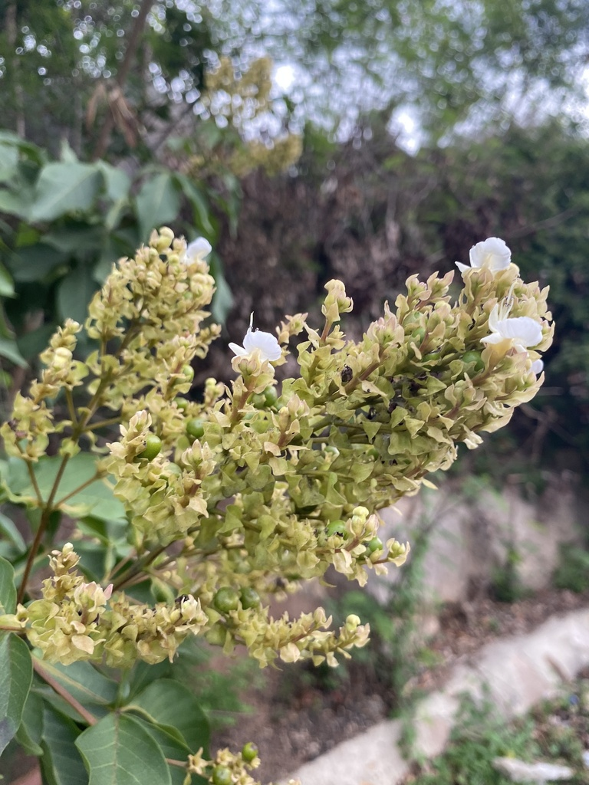

Trigoniaceae
(No common name)
Trigoniaceae is a family of flowering plants in the order Malpighiales, comprising about 5 genera and 28-35 species of trees, shrubs, and lianas. The family has a notable disjunct distribution across the tropics (Neotropics, Madagascar, SE Asia/Malesia). Key characteristics include usually opposite, simple leaves with interpetiolar stipules, distinctly zygomorphic (bilaterally symmetrical) flowers often resembling those of legumes (but structurally different), and fruit typically a septicidal capsule with hairy or winged seeds.
Overview
Trigoniaceae is a relatively small family primarily found in tropical forests. Its distribution pattern is a classic example of tropical disjunction, with the largest genus Trigonia in the Neotropics, Humbertiodendron in Madagascar, and Trigoniastrum in Southeast Asia and Malesia (plus two smaller Neotropical genera). This pattern suggests an ancient origin and subsequent separation due to continental drift or long-distance dispersal.
The most striking feature of the family is its flowers, which are strongly bilaterally symmetrical and superficially resemble the papilionoid flowers of the Fabaceae (legume family), with standard, wing, and keel petals. However, this is a case of convergent evolution, as the underlying structure (especially stamen arrangement and ovary) and fruit type (typically a capsule, not a legume pod) are different. Vegetatively, the usually opposite, simple leaves with stipules located between the petioles are characteristic.
The family has limited economic importance, though some species might be used locally. Its main significance lies in its interesting biogeography and its unique floral morphology within the large and diverse Malpighiales order.
Quick Facts
- Scientific Name: Trigoniaceae
- Common Name: None widely accepted
- Number of Genera: Approximately 5 (Trigonia, Trigoniastrum, Humbertiodendron, etc.)
- Number of Species: Approximately 28-35
- Distribution: Disjunct: Neotropics, Madagascar, SE Asia/Malesia; tropical forests.
- Evolutionary Group: Eudicots - Rosids - Fabids - Malpighiales
Key Characteristics
Habit
Plants are trees, shrubs, or lianas (woody vines).
Leaves
Leaves are simple with entire (smooth) margins. They are typically arranged oppositely on the stem (rarely whorled or alternate). A key feature is the presence of stipules, which are usually interpetiolar (located on the stem between the petioles of the opposite leaves), sometimes large, and occasionally fused or falling early.
Inflorescence
Flowers are borne in terminal or axillary branched inflorescences, typically panicles or thyrses.
Flowers
Flowers are bisexual and distinctly zygomorphic (bilaterally symmetrical), often superficially resembling the papilionoid flowers of Fabaceae.
- Calyx: Consists of 5 sepals, fused at the base, usually unequal in size. The posterior (adaxial or upper) sepal is often larger and may be spurred or saccate (pouch-like) at the base.
- Corolla: Consists of 5 distinct (free), unequal petals. Typically differentiated into an upper, erect petal (standard or vexillum), two lateral petals (wings or alae), and two lower petals that may be fused or coherent to form a boat-shaped structure (keel or carina) enclosing the stamens and pistil. Petals are often white, yellow, or pinkish.
- Androecium: Contains usually 5-12 stamens. Filaments are often fused basally into a sheath or tube that is typically open on the upper (adaxial) side. Stamens may be of unequal lengths, and sterile stamens (staminodes) may sometimes be present. Anthers typically dehisce via longitudinal slits.
- Gynoecium: The ovary is superior. It is typically composed of 3 fused carpels forming a 3-locular (three-chambered) ovary (sometimes 1-locular). Placentation is usually axile (if 3-locular) or parietal (if 1-locular). Ovules are 1 to many per locule. There is a single, often bent or curved style with a small terminal stigma.
Fruits and Seeds
The fruit is typically a septicidal capsule, splitting open along the partitions between the locules into 3 valves. Less commonly, the fruit may be a samara (winged fruit).
Seeds are often hairy or winged, suggesting adaptation for wind dispersal.
Field Identification
Identifying Trigoniaceae involves recognizing the combination of opposite, stipulate leaves with the unique, zygomorphic flowers and capsular fruits, within its specific tropical distribution:
Primary Identification Features
- Zygomorphic Flowers (Pea-like): Flowers strongly bilaterally symmetrical with standard, wing, and keel petals.
- Opposite, Simple Leaves: Leaves paired at nodes, undivided, with entire margins.
- Interpetiolar Stipules: Stipules present between the petioles of opposite leaves (may require careful observation).
- Fruit a Septicidal Capsule: Dry fruit splitting into 3 valves is typical.
- Habit: Trees, shrubs, or lianas in tropical forests.
- Geographic Location: Restricted to Neotropics, Madagascar, or SE Asia/Malesia.
Secondary Identification Features
- Fused Stamens: Staminal filaments often united into a sheath at the base.
- Spurred/Saccate Posterior Sepal: The upper sepal may have a pouch or spur.
- Hairy or Winged Seeds: Visible if mature capsules are open.
Seasonal Identification Tips
- Flowering Season: Flowers are the most distinctive feature.
- Fruiting Season: Mature capsules and seeds aid identification.
- Vegetative State: Opposite, simple, entire leaves with interpetiolar stipules are key vegetative clues.
Common Confusion Points
- Fabaceae (Legume Family - Papilionoideae subfamily): Have very similar zygomorphic flowers (standard, wings, keel). However, Fabaceae usually have alternate, compound leaves (though some simple), stipules are typically paired at the petiole base (not interpetiolar), often have 10 stamens (variably fused), a single carpel (unicarpellate ovary), and the fruit is a legume (pod).
- Polygalaceae (Milkwort Family): Also have zygomorphic flowers sometimes superficially resembling legumes (with wing-like sepals and a keeled petal), but floral structure is different (e.g., often 8 stamens fused, superior ovary usually 2-carpellate), leaves often alternate, and fruit usually a capsule, nut, or drupe.
- Vochysiaceae: Another family with zygomorphic flowers, often spurred, but typically with only 1 fertile stamen, different ovary structure, and fruit often a samara or capsule. Primarily Neotropical.
- Families with Opposite Leaves (e.g., Rubiaceae, some Malpighiaceae): Distinguished by different flower structures (often actinomorphic in Rubiaceae, specialized structures in Malpighiaceae) and fruit types. Rubiaceae also has interpetiolar stipules but typically actinomorphic flowers and inferior ovary.
Field Guide Quick Reference
Look For:
- Tree/shrub/liana (Tropics)
- Opposite, simple, entire leaves
- Interpetiolar stipules
- Zygomorphic flowers (pea-like: standard, wings, keel)
- 5 unequal sepals (1 often spurred/saccate)
- 5 unequal petals
- Stamens often fused
- Superior ovary (usually 3 carpels)
- Fruit a capsule (usually 3-valved)
- Seeds hairy/winged
Key Distinctions:
- vs. Fabaceae: Trigoniaceae has opposite leaves (usually), interpetiolar stipules, different ovary/fruit (capsule).
- vs. Polygalaceae/Vochysiaceae: Differ in specific floral structure (stamen number/fusion, ovary).
- vs. Rubiaceae: Trigoniaceae has zygomorphic flowers, superior ovary.
Notable Examples
The family's diversity is spread across its few, geographically isolated genera:

Trigonia species
(No common name)
The largest genus, containing shrubs and lianas primarily found in the Neotropics (Central and South America). They exhibit the characteristic opposite leaves, interpetiolar stipules, zygomorphic flowers, and capsular fruits of the family.

Trigoniastrum hypoleucum
(No common name)
A tree species representing the family in Southeast Asia and Malesia. It has opposite, simple leaves often whitish underneath, and bears panicles of small, zygomorphic flowers followed by capsular fruits.

Humbertiodendron saboureaui
(No common name)
A tree endemic to Madagascar, representing the family's presence on that island. It shares the core family characteristics, including opposite leaves with interpetiolar stipules and likely zygomorphic flowers (details may be less commonly illustrated).
Phylogeny and Classification
Trigoniaceae is classified within the large and highly diverse order Malpighiales, which belongs to the fabid clade (also known as the nitrogen-fixing clade, although Trigoniaceae itself does not fix nitrogen) within the rosid eudicots.
Molecular phylogenetic studies place Trigoniaceae within a specific subgroup of Malpighiales, often closely related to families like Dichapetalaceae, Chrysobalanaceae, and Euphroniaceae. Understanding these relationships helps clarify the evolution of floral forms (like the zygomorphic flower convergent with legumes) and biogeographic patterns within the vast Malpighiales order. The family's disjunct distribution across three continents points to an ancient origin, likely predating the final breakup of Gondwana, or involving significant long-distance dispersal events.
Position in Plant Phylogeny
- Kingdom: Plantae
- Clade: Angiosperms (Flowering plants)
- Clade: Eudicots
- Clade: Rosids
- Clade: Fabids (Nitrogen-fixing clade)
- Order: Malpighiales
- Family: Trigoniaceae
Evolutionary Significance
Trigoniaceae is notable from an evolutionary perspective:
- Biogeography: Its classic tropical disjunct distribution (Neotropics-Madagascar-SE Asia) is a key example used in historical biogeography to infer past continental connections and dispersal routes.
- Convergent Evolution: The independent evolution of a zygomorphic flower structure strongly resembling that of papilionoid legumes (Fabaceae) is a striking example of convergent evolution likely driven by similar pollination syndromes.
- Phylogenetic Position: Its placement within Malpighiales helps resolve relationships within this enormous and complex order, linking different morphological groups.
- Morphological Combination: The combination of opposite leaves, interpetiolar stipules, zygomorphic flowers, and capsular fruits distinguishes it within its order.